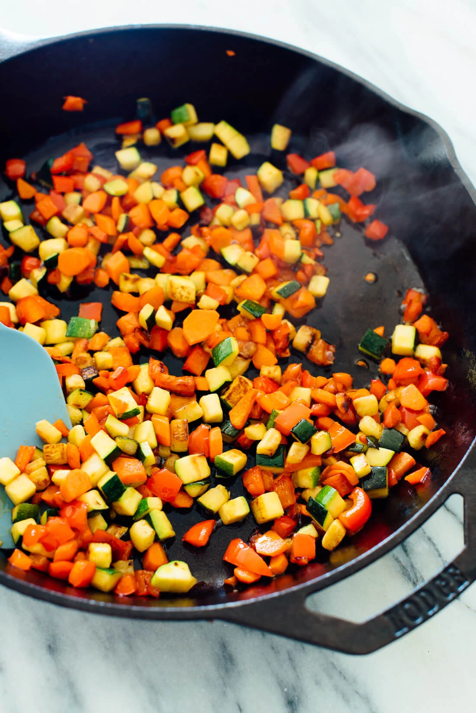
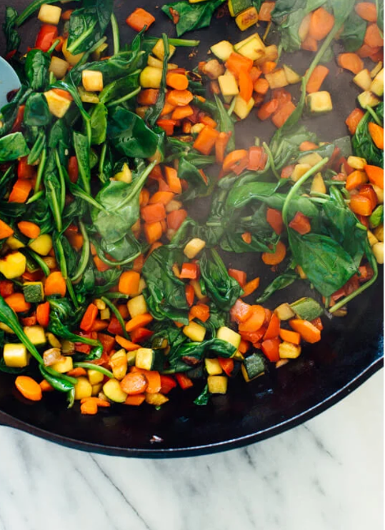
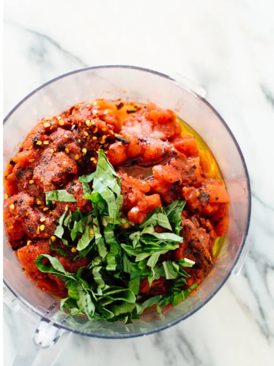
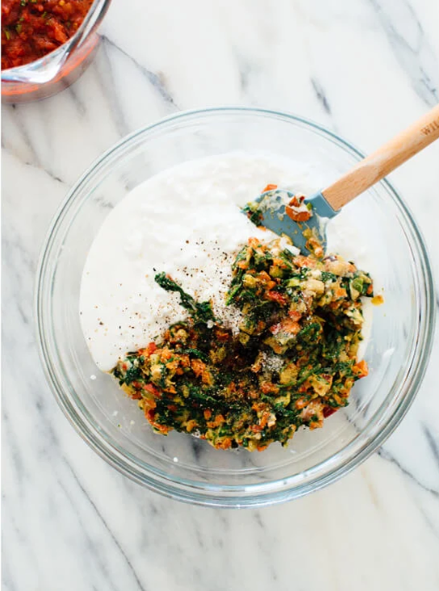
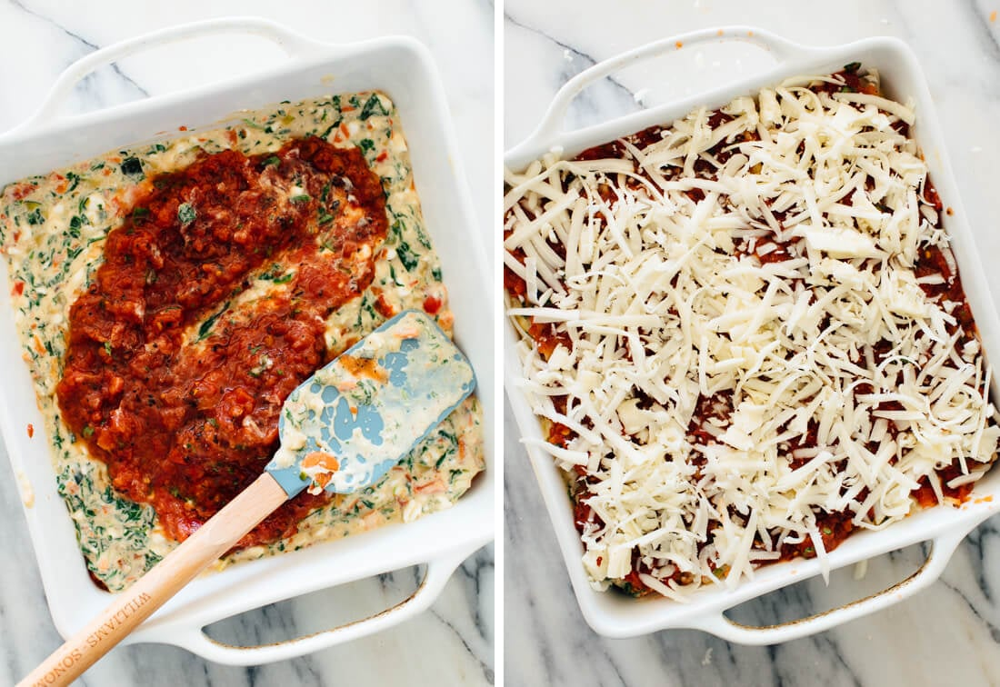
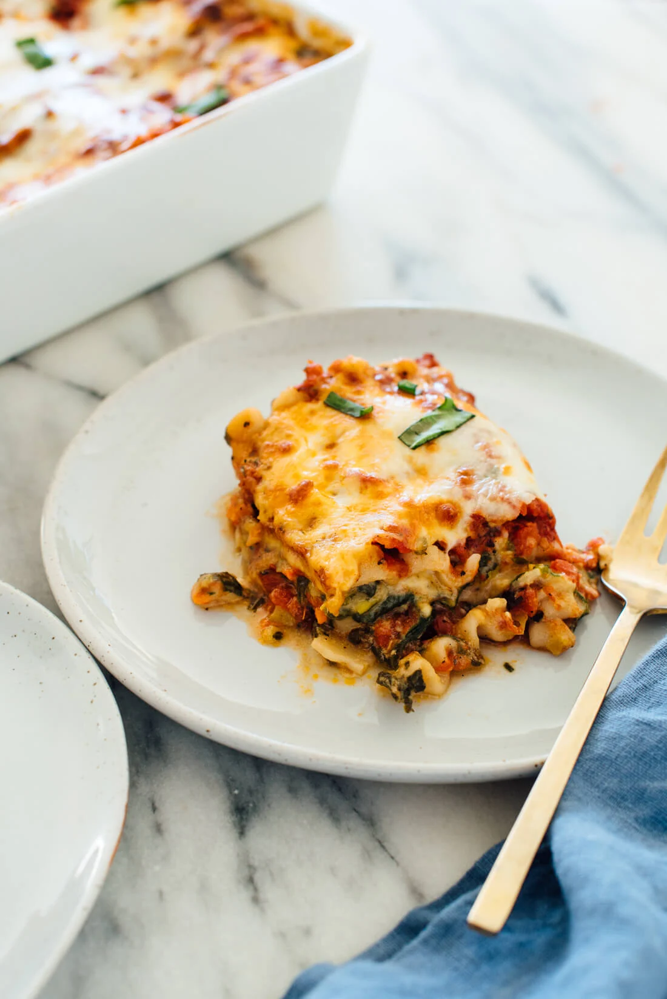

Welcome! If you're here, you're probably in the mood for a hearty, cheesy plate of Veggie Lasagna. This
classic Italian dish layers tender pasta, savory vegetables, and creamy cheese, creating a warm and satisfying
meal.
This recipe is designed to be straightforward and approachable, with clear steps and ingredients you can easily
find. Whether you're cooking for family, friends, or just yourself, this veggie lasagna is sure to bring comfort
and joy to the table.
Ingredients
Lasagna Sheets
9-12 sheets of no-boil or pre-cooked lasagna pasta
Vegetable Filling
1 small zucchini, sliced
1 red capsicum (bell pepper), diced
1 medium carrot, thinly sliced or grated
1 cup fresh spinach, chopped
Cheese Mixture
200g cream cheese or ricotta
1 cup shredded mozzarella cheese
½ cup grated parmesan cheese
Tomato Sauce
2 cups tomato sauce (homemade or store-bought)
1 medium onion, finely chopped
2-3 garlic cloves, minced
1 tsp dried oregano
1 tsp dried basil
Salt and pepper to taste
For Garnish
Fresh basil leaves
Extra shredded mozzarella for topping
Preparation
Step 1: Saute the Vegetables

Heat 1 tbsp oil in a pan over medium heat. Add diced carrots, zucchini, and red capsicum. Sauté until
slightly tender but still crisp. Remove from heat and set aside.
Step 2: Cook the Spinach

In the same pan, add the chopped spinach and cook until wilted. Combine with the sautéed vegetables
in a mixing bowl.
Step 3: Make the Tomato Sauce

In a blender or food processor, blend the chopped tomatoes, garlic, onion, and seasoning into a smooth
sauce. Pour into a pan and simmer for 5-7 minutes until slightly thickened.
Step 4: Combine Vegetables with Cream

Add cream and a pinch of salt to the sautéed vegetables and spinach mixture. Mix well to create a
creamy filling for the lasagna layers.
Step 5: Layer the Lasagna

In a baking dish, spread a layer of tomato sauce, followed by lasagna sheets. Add a layer of the creamy
vegetable mixture, sprinkle shredded mozzarella, and repeat layers until all ingredients are used.
Finish with a generous layer of shredded cheese on top.
Step 6: Bake and Serve

Preheat the oven to 180°C (350°F) and bake the lasagna for 25-30 minutes until the cheese is golden
and bubbly. Let it rest for 5 minutes, then slice and serve warm.
Recipe Notes
Vegetable prep: Chop all vegetables uniformly to ensure even cooking and layering.
Sautéing: Cook the vegetables just until tender-crisp to retain texture and flavor.
Spinach handling: Drain excess water after cooking spinach to prevent a watery lasagna.
Layering: Spread ingredients evenly in each layer for consistent taste in every bite.
Cheese topping: Use freshly shredded cheese for better melting and golden color.
Baking: Cover the lasagna with foil for the first 20 minutes, then uncover to brown the
top.
Resting time: Let the baked lasagna rest for 5 minutes before cutting to allow layers to
set.